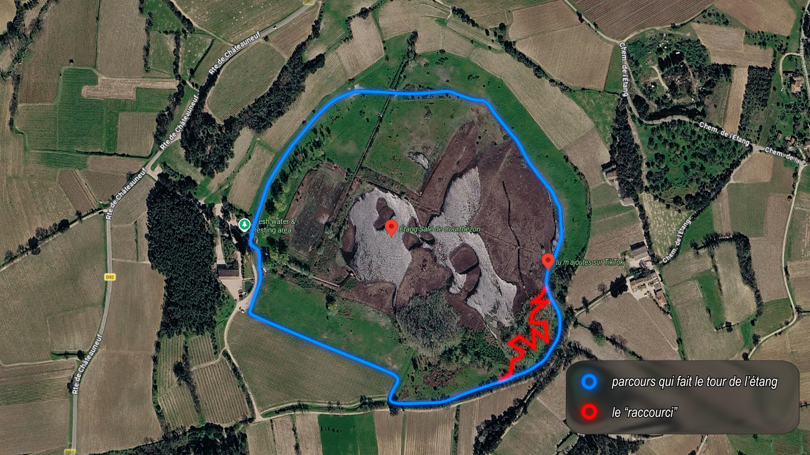
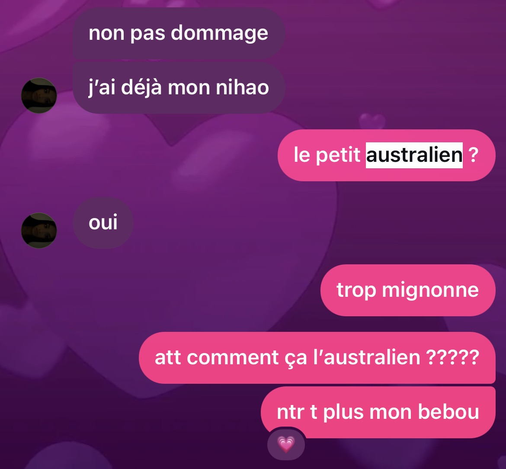
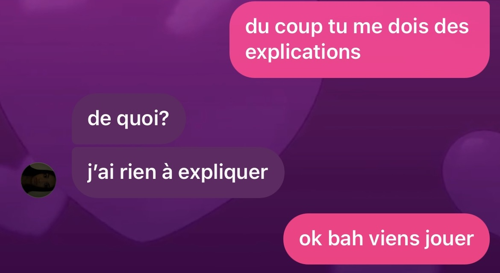
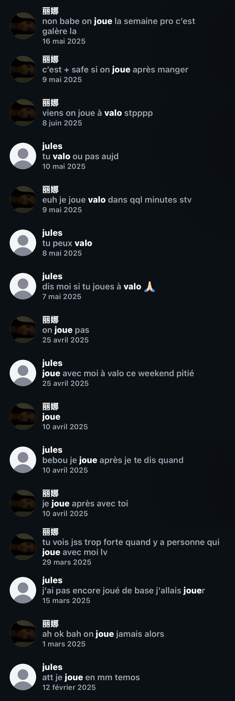
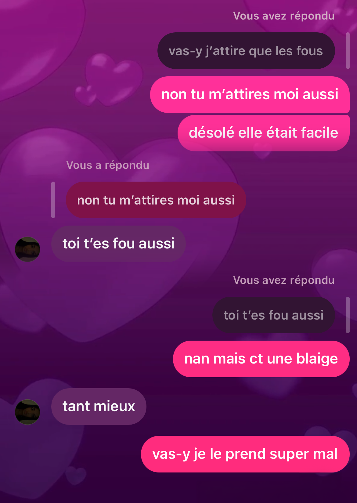

Lettre pour Li-Na ❤️
Mais quel est donc le code ?
Coucou mon cœur,
je tenais à te faire ça parce qu’au plus les jours passent, au plus je me rends compte que tu es essentielle pour moi. Tu comptes énormément pour moi, jamais ma vie a été aussi belle depuis ces 425 jours, et je peux pas m’empêcher de faire que de penser à toi mais vraiment tout le temps à toi. Je t’aime à la folie c’est pas quantifiable Li-Na je perds la tête tu me fais devenir fou et qu’est-ce que j’aime perdre la tête avec toi ❤️ Je veux tout vivre avec toi, et je sais que je vais le vivre, j’en peux plus d’attendre de te revoir, je meurs d’envie de te prendre dans mes bras et de t’embrasser autant que possible. Je veux vraiment essayer de poser dans cette « lettre » des mots sur nous deux pour que tu puisses avoir mon point de vue dans notre relation.
Tout commence précisément le mardi 3 septembre 2024, à 9 heures. Je ne le sais pas encore, mais je viens de rentrer dans une salle où derrière moi, à un seul petit mètre, il se trouve la femme de ma vie.
J’essaie de savoir à peu près qui il y a dans ma classe, et assez rapidement, en une dizaine de jours, je sais comment tu t’appelles. Je sais que c’est toi la fille qui a le plus beau dos au monde, que je regarde tant pendant les cours, de français notamment.
Je remarque tes colliers à ton cou, je m’imprègne de l’image que j’ai en voyant ta nuque et tes épaules, je sais pas comment l’expliquer mais je suis vraiment fasciné par toi. Pas tellement de manière amoureuse au début, mais il y a quand même de l’admiration dans l’équation. Je descends mes yeux, ils se posent sur ton t-shirt, je m’en souviens c’était un de ces t-shirts que tu mets (et qui te vont si bien) où on peut voir ton ventre, puis mes yeux vont sur ton bas du dos. Bien que tu ne l’aimes pas, moi je l’adore. Dès les premiers instants que je te regarde. En fait c’est ta peau que j’adore, elle est tellement belle c’est vraiment incroyable, elle est d’une couleur si magnifique que c’est mon passe-temps en cours. J’aime te regarder, dès les premiers instants, alors que je ne te connais même pas. C’est à partir de là que j’ai commencé à tomber amoureux de toi je crois, pourtant, je ne le sais pas encore. Le temps passe, les jours s’enchaînent, et vient le fameux cours d’anglais sur les ponts et les murs. M. Cartier annonce la tâche finale, et je comprends rien au véritable enjeu.
Heureusement, la fille que je regardais tant m’explique et m’aide, le lundi 2 décembre 2024, vers 17h. Je prends ton aide en considération, puis on se retrouve à la gare. Il y avait pas beaucoup de places, mais Juliette et toi étiez assises dans des places à 4. Étant donné que le lundi j’avais une heure de trou avant l'anglais, j’avais mon ordi portable sur moi, pour pouvoir travailler sur le PowerPoint jusqu’à la fin. Je le sors et je vous le montre. Effectivement je n’avais RIEN compris. Mais c’est pas grave, tu me dis que tu peux m’aider et que tu me donnerais le prompt que t’as utilisé pour avoir des sujets, comme ça je pourrais recommencer sur une bonne voie. J’étais vraiment soulagé, et le mercredi 4 décembre à 18h41 je t’envoie notre premier message :
Ce truc tout simple m’a permis de rentrer en contact avec la femme de ma vie, celle que j’aime tant. Je te parlais beaucoup, j’adorais te parler, et je voulais continuer de te parler. C’est pour ça que le temps passe et Squid Game saison 2 sort. Tout le monde en parle, moi je regarde, et je réponds à ta story en disant : « g pas vu la s2 pour l’instant elle est bien ? ». Je voulais juste te parler, je vois que tu aimes ça et que tu m’en parle aussi, du coup je suis content parce que je sais un peu ce que tu aimes et j’ai de la matière pour te parler.
Tu connais l’étang salé de Courthézon ? moi je ne le connaissais pas, et mon père, un beau dimanche aléatoire de février, me propose d’aller y faire une balade à pied pour se « dégourdir les jambes ». J’accepte un peu à contrecœur, mais en réalité j’en tire un souvenir incroyable. Alors qu’on y allait que nous deux parce que ma sœur était malade, la balade se transforme en perte dans la forêt. On a fait un « détour » et on était un peu perdu,

mais au final j’ai pas eu le temps de m’en rendre compte parce que je te parlais sur TikTok. Peu avant ça j’étais tombé sur une vidéo qui parlait de Squid Game et qui était drôle. Même si 2 heures avant je t’avais déjà envoyé un TikTok aussi sur le même sujet, je décide de t’en renvoyer un autre.
Mais pourquoi autant forcer en 2 heures ? Parce que j’étais malicieux : quand on envoie un TikTok avec un lien, on a un pop-up « … t’as envoyé la vidéo. Appuie pour le suivre ».
Bingo !! au bout de la deuxième fois tu me suis, et pendant ce temps je marchais autour de ce lac. J’étais trop content purée t’as pas idée, j’ai regardé tout ton compte je m’en souviens, et surtout je m’en rappellerai toute ma vie mais en description de ton dernier TikTok tu avais mis « j’ai besoin d’amis svp ». Alors là, t’as pas idée d’à quel point ça m’a motivé pour te parler. Je ne t’ai plus lâché, parce que je voyais ça comme un signe pour te parler et je voulais trop devenir ton ami, parce qu’on a le même type d’humour sur les vidéos et SURTOUT j’avais enfin quelqu’un à qui envoyer des TikTok en anglais. Je te jure Li-Na mais j’ai passé le reste du trajet en étant trop content, je m’en souviens je sautillais un peu parce que j’étais trop content !!! Aujourd’hui j’en garde un souvenir exceptionnel, ça me rend trop heureux d’y penser ❤️
L’australien… ah la la mon PIRE ennemi. Avant même qu’il commence à te faire souffrir je l’aimais pas. D’ailleurs, en relisant les messages, ça se voyait CLAIREMENT. J’étais trop jaloux des autres gars avec qui tu parlais même si je faisais genre que non, et en particulier ce mec m’a trop énervé.


Bon… je le portais pas trop dans mon cœur… heureusement, tu décides de le bloquer (moi j’avais pas tellement compris que t’étais avec lui…) et la vie reprend son cours.
On a beaucoup joué ensemble. Vraiment beaucoup

et parmi toutes les personnes avec qui j’ai pu jouer, t’es de très loin la meilleure.
Pas forcément parce que t’es forte, mais parce que être en appel avec toi c’est vraiment bien, d’un point de vue amical ou amoureux. Je me souviens de quand tu criais quand t’avais peur, de quand tu m’encourageais pour gagner alors que tout le monde était mort… j’étais content de jouer à Valo parce qu’avant tout je pouvais te parler. C’était pas tellement le jeu qui importait, mais plus le contact avec toi, et ça je vais m’en rendre compte au fur et à mesure.
Je commence à réfléchir, et je me demande si je t’aime ou pas. Je sais pas, je suis un peu confus ; par message on s’écrit mais au lycée on s’évite. Est-ce que de ton point de vue on est ami ou alors je peux tenter ma chance ? Je sais pas trop et je tente une tactique affreuse : te « draguer ». En fait, quand je le faisais, j’étais vraiment pas premier degré, je voulais juste voir ta réaction face à ça : est-ce que déjà dans un contexte de blague tu rentrerais dans le jeu, ou alors tu me stopperais direct ?

Bon… énorme flop, mais c’est compréhensible, je te « fricote » mais après je dis que je rigole et donc ça a l’effet inverse, si toi tu m’aimes bah tu vas pas savoir quoi penser et si moi aussi je t’aime. Pourtant, je pensais que ça allait marcher… maaaaaa foi 😓
On rediscute un peu, j’apprends que Juliette te taquinait vis-à-vis de moi et ça me rassure. Pourquoi ? parce que la manière dont tu me l’as dit ça m’a fait comprendre qu’en soi c’était pas quelque chose qui te gênait parce que elle disait que t’étais amoureuse de moi, mais plutôt parce que moi je l’entendais.
Et là : tu m’appelles babe (bon en vrai c’est le lendemain) et tu me donnes le courage de me lancer


TROP BIEN J’EN REVIENS PAS !! OUAISSSSSSSSS J’ÉTAIS ET JE SUIS TROP CONTENTTTTTTT 😛😛
Depuis ce jour, je peux pas m’empêcher de penser à toi chaque jour. Je dis pas qu’avant c’était pas déjà le cas, mais juste j’étais dans le déni. Mais depuis ce moment, je peux penser tout le temps à toi sans me dire qu’autant c’est pas réciproque, et purée je me suis jamais senti aussi bien.
Li-Na tu me fais ressentir tellement de choses, des choses que jamais avant j’ai pu ressentir. Chaque jour que je passe avec toi est juste du pur bonheur, Li-Na je t’aime tellement et je suis tellement content d’être avec toi !
Je suis fier de toi mon amour, fier de qui tu es, je parle de la femme forte, belle et intelligente à qui j’ai la chance de m’adresser chaque jour. Même si tu ne le vois pas, moi je le vois : t’es de loin la plus belle de tout ce qui peut exister, je suis trop admiratif de ta beauté, autant intérieure qu’extérieure.
Tu as le plus beau visage que j’ai jamais vu. Tes cheveux sont tellement beaux, même quand ça fait des mois qu’ils n’ont pas été re-lissés. J’adore tes yeux, tes beaux yeux marrons qui me regardent, et tes cils magnifiques qui leur tiennent compagnie. J’adore ton nez, j’adore tes joues, à tel point de me donner envie de les manger. Et puis, il faut pas oublier tes lèvres. Elles sont magnifiques, pulpeuses, douces, et se transforment en le plus beau sourire de la galaxie.
Tu as le plus beau corps qui existe depuis la création de la vie. Tu es le résultat exact de millions d’années d’évolution et de travail de la nature pour créer le plus beau corps possible. Je suis très sérieux quand je le dis Li-Na. J’espère que tu me crois vraiment quand je le dis et j’ai besoin que tu me croies. Je t’aime à la folie, j’adore embrasser ton cou. Purée ton cou il sent tellement bon, il est tellement doux, j’y tiens tellement. En fait attends… je pense ça de tout ton corps. Je l’aime trop, je tiens énormément à chaque partie de toi.
Je tiens à ta nuque, parce que c’est la première partie de ton corps que j’ai jamais vue.
Je tiens à tes bras, parce qu’ils me permettent de me sentir aimé quand on se fait des câlins.
Je tiens à tes mains, parce que je peux les tenir pour me lier à toi peu importe le moment.
Je tiens à tes seins, parce qu’ils me permettent de te tenir d’une manière plus proche quand on est nous deux.
Je tiens à ton dos, parce que j’adore le sentir quand on se fait des câlins.
Je tiens à ton ventre, parce que j’aime l’entendre faire des petits bruits quand mon amour a faim.
Je tiens à ta nénette, parce que je me sens tellement bien dedans.
Je tiens à tes fesses, parce que j’adore les sentir quand on regarde quelque chose à la télé.
Je tiens à tes cuisses, parce que j’ai pu les caresser pendant que je travaillais.
Je tiens à tes mollets, parce que j’adore les masser.
Je tiens à tes pieds, parce que j’adore voir tes petits ongles.
Je tiens à toi, Li-Na, parce qu’en plus d’être née avec le corps le plus parfait qui soit, tu es née avec une personnalité qui la rivalise. J’aime ta bienveillance, j’aime l’aide que tu apportes aux autres, j’aime ton humour, j’aime ta manière de penser, j’aime comment tu parles.
Je tiens à toutes les fois où on s’est vus, de notre première sortie au cinéma à mardi quand tu es venue me voir. J’y tiens vraiment, grâce à toi tous les matins j’ai de la force pour me lever.
Tu es parfaite. Pas juste belle. Pas juste magnifique. Non non. La femme la plus parfaite qu’il existe. Si on était à l’antiquité, tu serais considérée comme la réincarnation d’Aphrodite, j’ai pas peur de le dire.
Je sais pas comment continuer, je voulais te parler de mes sentiments actuels mais ils sont trop forts pour être décrits. Je peux uniquement te dire que tu es la personne que j’aime le plus, que tu es ma raison de vivre, que tu es ce pourquoi je regarde toutes les deux minutes si j’ai reçu un message. Je t’aime à la folie mon ange, je ferais tout pour toi, j’espère que tu sais que tu peux tout me dire sans te sentir jugée ou alors sans avoir peur que je réagisse mal. Et même si des fois tu ressens ça, sache que ça ne sera jamais une raison pour laquelle je te parlerais mal, ou que je te verrais d’une autre manière, et encore moins une raison pour que je te quitte (même si tu me trompes ou des trucs comme ça lol je t’aime trop pour te quitter)
Je veux vraiment te rendre la plus heureuse possible, je me sens tellement lié à toi que tout ce qui te rend heureuse me rend aussi heureux. Je t’aime à en mourir mon amour, je ne pense qu’à toi tout le temps (je suis désolé si je me répète). Tu es devenue un besoin pour mon corps, et mon corps le réclame tout le temps.
J'aime ma femme de ma vie, j’espère que ça te fait plaisir ❤️ je vais actualiser le site de temps en temps pour ajouter encore plus de choses et pour que tu puisses te sentir encore plus aimée quand je ne peux pas être avec toi ❤️❤️ Je t’aime mon amour, j’ai hâte de te revoir. — Jules